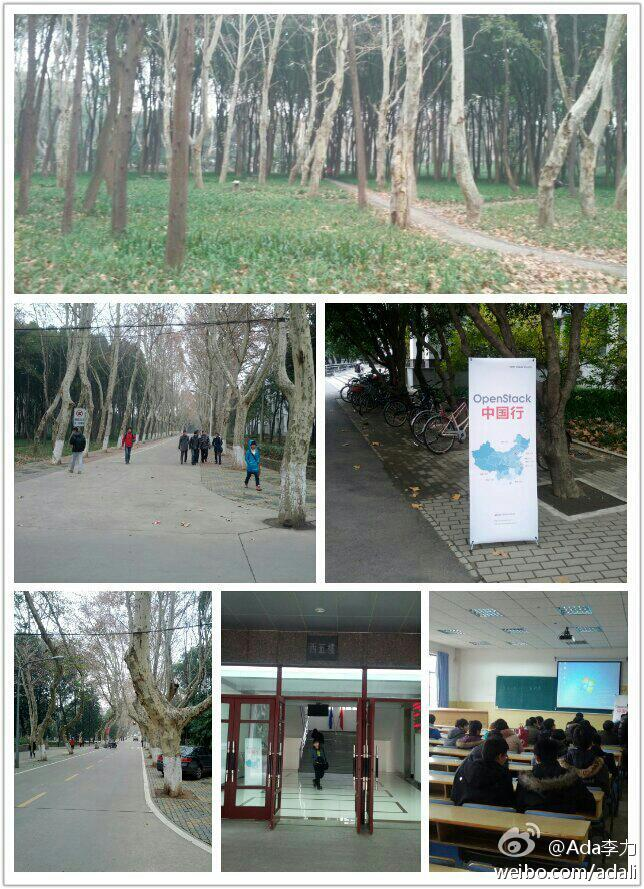
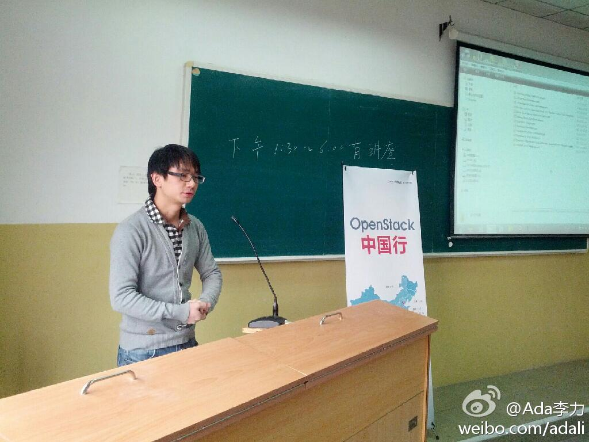
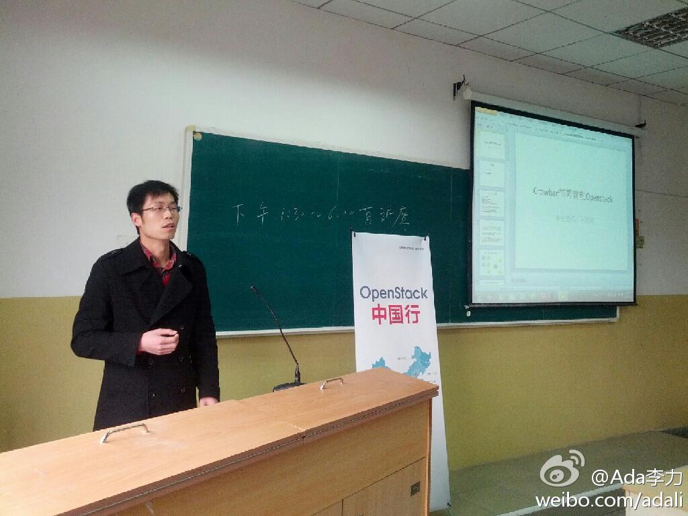
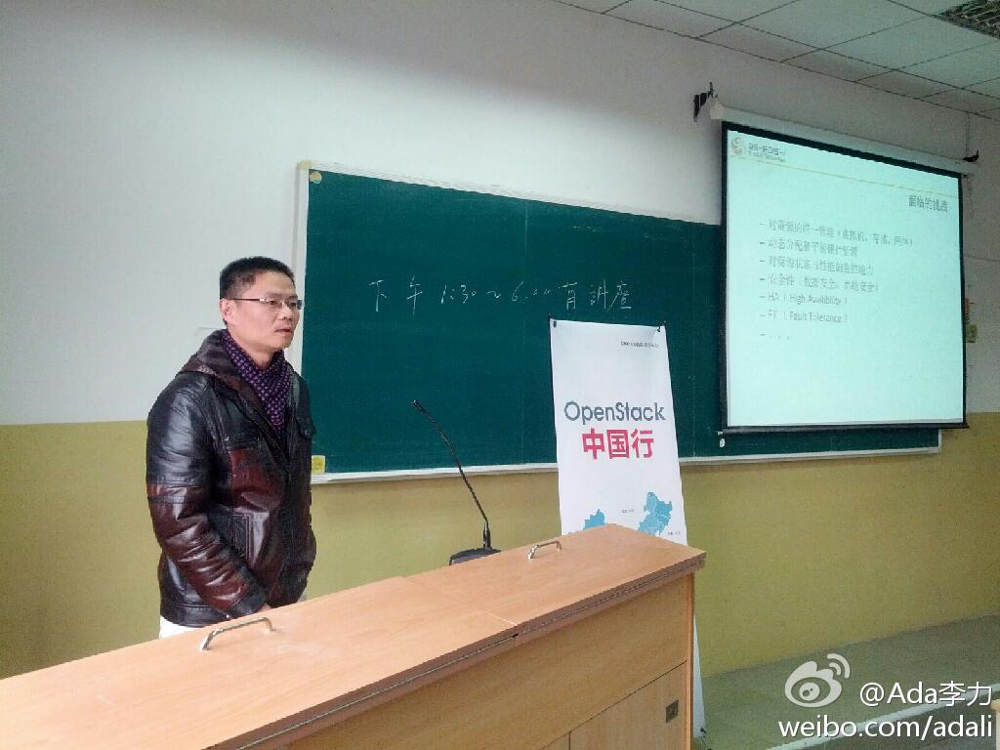

最近几个月住经济型酒店，发现这种酒店也不缺什么，住宿该有的都有。昨天安睡一晚，原因可能是房间干净，热水足，空调给力，房间很暖和。疑惑五星级酒店的价格贵在什么地方呢? 至少以前住的时候，也没感觉自己多享受了什么。 我在这里：武汉·武汉路德怡酒店
初中起就开始住校，这么长时间的住宿历史，养成的毛病是不管房间多大，最常呆的地方是不足两平方米的床上，看书，玩电脑，喝水，吃零食… 有的时候会很奇怪，人要那么大的房子干什么，使用率并不高啊。但大家聚在一起，最喜欢谈的还是房子房子。
#OpenStack#中国行武汉站，在华中科技大学西五楼506教师。校园很漂亮，高大的树木矗立在路两旁。就是教室有些难找，地图定位貌似把教学楼都忽略了。 我在这里：武汉·华中科技大学西十二教学楼 
#OpenStack#中国行武汉站，还是@程辉 开场，他提到几个身边的例子，当年优秀的毕业生去了Intel, 朗讯，现在要么遇到中年危机，要么与当年选择互联网的同学差距巨大，从薪酬和位置。结论就是，还是互联网行业好，云计算更是大有可为。 
最近有不少文章在说外企人的尴尬。做为一个在外企呆过多年的人，我还是觉得，在中国这片国土上，只是想能够有尊严地过着普通人的生活，外企还是比央企，民企和国企好得多的地方。那些尴尬的外企人，不过是不甘心干那种温吞如水，又没有足够安全感的工作罢了。
#OpenStack#中国行武汉站，王江涛的题目是“Crowbar部署和管理OpenStack”，解决的是OpenStack模块多，集成工作量大的问题。这个是很实际的落地项目。在武汉有人在做这事，说明现今技术已无地域壁垒。 
#OpenStack#中国行武汉站，有听众提出能否用把个人计算机的空闲资源利用起来，用OpenStack组织起来，提供给更多人使用。David Wang帮着回答了，现在做不到只控制部分机器资源，但这个思路很好，是个好问题。
#OpenStack#中国行武汉站，邹新宇带来的是“基于OoenStack打造服务器虚拟化产品的实践”。介绍的vServer看起来已经是功能全，界面清晰的商业产品了。据说公司两年前决定加入云计算，因为之前业务机房管理与虚拟化息息相关，已积累了经验。 
晚上吃饭时，湖北人@程辉 说他当年报考学校就是不选武汉，因为觉得武汉人民风彪悍。我想起今天的出租车司机开车确实猛，在华中校园中也是猛起步猛加油，知道我来自北京时，就问：“北京人是不是都很有钱？”。下车拿票时我说所有票都给我，包括油票，他鄙夷：“两块钱的票你也要？”。
这种形式不错。@hellodba:本次活动签到70人，报名34人，收到2040元，支出：四位演讲嘉宾礼品1200，图书300，淘公仔200，零食120，志愿者午餐200，共计2020，基本收支平衡，剩余零头留作下次活动使用。
我带了六个CSDN的年历，本来是要送#OpenStack#中国行武汉站的讲师。现场觉得氛围不够，决定拿出来抽奖，采用之前听说过的微信摇一摇的方式，我和现场听众一起摇，我摇出谁，谁就算中奖。效果不错，每次能摇出两三个听众，还摇出过一个讲师呢。
 武汉·武汉路德怡酒店
武汉·武汉路德怡酒店